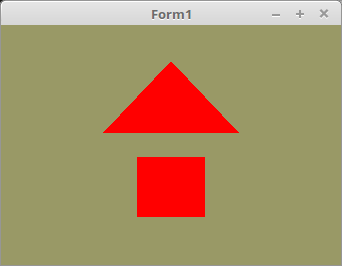

03 - Vertex-Puffer
00 - Einfachster Vertex-Puffer

Die Deklaration der Vektor-Koordianten Konstanten.
const
// Dreieck
Triangle: array[0..0] of TFace =
(((-0.4, 0.1, 0.0), (0.4, 0.1, 0.0), (0.0, 0.7, 0.0)));
// Quadrat
Quad: array[0..1] of TFace =
(((-0.2, -0.6, 0.0), (-0.2, -0.1, 0.0), (0.2, -0.1, 0.0)),
((-0.2, -0.6, 0.0), (0.2, -0.1, 0.0), (0.2, -0.6, 0.0)));
Hier werden die Daten in die Grafikkarte geschrieben.
Es hat nichts besonderes.
procedure TForm1.InitScene;
begin
glClearColor(0.6, 0.6, 0.4, 1.0); // Hintergrundfarbe
// Daten für das Dreieck
glBindVertexArray(VBTriangle.VAO);
glBindBuffer(GL_ARRAY_BUFFER, VBTriangle.VBO);
glBufferData(GL_ARRAY_BUFFER, sizeof(Triangle), @Triangle, GL_STATIC_DRAW);
glEnableVertexAttribArray(10);
glVertexAttribPointer(10, 3, GL_FLOAT, False, 0, nil);
// Daten für das Quadrat
glBindVertexArray(VBQuad.VAO);
glBindBuffer(GL_ARRAY_BUFFER, VBQuad.VBO);
glBufferData(GL_ARRAY_BUFFER, sizeof(Quad), @Quad, GL_STATIC_DRAW);
glEnableVertexAttribArray(10);
glVertexAttribPointer(10, 3, GL_FLOAT, False, 0, nil);
end;
Bei glDrawArrays(... ist der erste Parameter das wichtigste, hier wird angegeben, wie die Vektor-Koordinaten gezeichnet werden.
Hier im Beispiel, sind dies einfache Dreiecke.
procedure TForm1.ogcDrawScene(Sender: TObject);
begin
glClear(GL_COLOR_BUFFER_BIT);
Shader.UseProgram;
// Zeichne Dreieck
glBindVertexArray(VBTriangle.VAO);
glDrawArrays(GL_TRIANGLES, 0, Length(Triangle) * 3);
// Zeichne Quadrat
glBindVertexArray(VBQuad.VAO);
glDrawArrays(GL_TRIANGLES, 0, Length(Quad) * 3);
Vertex-Shader:
#version 330
layout (location = 10) in vec3 inPos; // Vertex-Koordinaten
void main(void)
{
gl_Position = vec4(inPos, 1.0);
}
Fragment-Shader:
#version 330
out vec4 outColor; // ausgegebene Farbe
void main(void)
{
vec3 col = vec3(1.0, 0.0, 0.0);
outColor = vec4(col, 1.0);
}